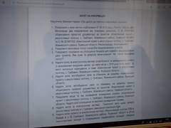
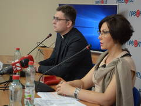

Головні Новини
ЛКПЗбиранка
маніпулює проектами рекультивації Грибовицького сміттєзвалища поблизу Львова
Голова екологічної комісії Жовківської райради Ігор Муравський стверджує, що Львівська міська рада та ЛКП «Збиранка» говорять одне, а роблять зовсім інше.

У березні 2018 товариство з обмеженою відповідальністю «Інститут гірничо-хімічної промисловості» («ГІРХІМПРОМ») на замовлення львівського комунального підприємства «Збиранка» розробило проект «Реконструкції полігону ТПВ м.Львова у с.В.Грибовичі Жовківського району Львівської області в об’ємі першочергових заходів з попередження надзвичайних ситуацій, ліквідації негативних наслідків аварії на землях Малехівської сільської ради». 7 червня 2018 року ЛКП «Збиранка» змінило назву вищезгаданого проекту на «Комплексний проект з рекультивації полігону, с.Грибовичі, Жовківського району, Львівської області. Реконструкція» та зареєструвало його у Міністерство екології та природніх ресурсів України для оцінки впливу на довкілля.
Це з’ясувалося сьогодні, 26 липня, під час засідання Львівського прес-клубу на тему: “Нові коригування проектів будівництва сміттєпереробного комплексу і реконструкції Грибовицького сміттєзвалища”, яке відбулося у Львівському прес-клубі. Нагадаємо, що 12 липня у Львівському прес-клубі відбулося засідання, де спікери намагалися з’ясувати що ж за проекти реконструкції зареєстровані на сайті Мінприроди та знайти їх автора. Власне, на вищезгаданому сайті оприлюднено два абсолютно однакові проекти, які різняться кількома словами в назві. Тоді директор департаменту екології та природних ресурсів Львівської облдержадміністрації Руслан Гречаник, начальник Державної екологічної інспекції у Львівській області Микола Маланич і технічний директор ТзОВ «Інститут «ГІРХІМПРОМ» Іван Зозуля стверджували, що не бачили цього проекту в очі. Еколог МБО “Екологія-Право-Людина” Алла Войціховська каже, що справді комплексний проект, який би мав бути зареєстрований у Міністерстві екології та природних ресурсів, ще розробляється. - Цей проект, який містить назву «Комплексний проект з рекультивації полігону, с.Грибовичі, Жовківського району, Львівської області.
Реконструкція», на сьогодні розробляє харківська фірма «Діпрокомунбуд». А сам зміст проекту взяли зовсім з іншого проекту, з першочергових заходів, - каже Алла Войціховська. Цікаво, що зареєстрований у двох видах проект, за словами еколога, передбачає збільшення площі полігону твердих побутових відходів, створення додаткової місткості для збору фільтратів, переміщення дамби, будівництво спостережних свердловин. Тобто усіх тих робіт, які вже нібито виконуються на полігоні. Гроші, принаймні, на це регулярно надають. - Я не розумію, для чого будувати додаткову ємність для збору фільтратів, коли минулого та цього року для цього вже витрачено мільйони гривень? Спостережні свердловини десять років тому вже були збудовані. Їх треба лише відновити. Натомість в квітні оголошено тендер на проведення будівельних робіт, який вже 15 травня виграла київська компанія «Сучасні будівельні рішення», - говорить Алла Войціховська. Вона нагадала, що всі ці роботи будуть проводитися на землях Малехівської сільської ради. Проте ніхто з органами місцевого самоврядування та громадськості проектні завдання не узгоджував. - Мета цих маніпуляцій – витратити кошти і нічого не зробити, - переконана еколог МБО “Екологія-Право-Людина”.
Її підтримує і голова постійної комісії з питань екології та природокористування Львівської міської ради Ірина Оршак. - Я вважаю, що такі речі роблять для того, щоби заплутати і депутатів Львівської міської ради, і експертів, і журналістів, і громаду міста. На жаль, у нас сталася ситуація, коли чиновники міської ради та представники комунальних підприємств не доповідають ні депутатам міської ради, ні профільній екологічній комісії про цю ситуацію, - висловила свою думку з цього приводу Ірина Оршак. Голова екологічної комісії Жовківської райради Ігор Муравський стверджує, що Львівська міська рада та ЛКП «Збиранка» говорять одне, а роблять зовсім інше. - Станція з очистки інфільтрату з продуктивністю в 150 кубічних метрів повинна була запрацювати ще 15 вересня 2017 року. На її будівництво витратили один мільйон 440 гривень. У лютому 2018 року додали ще 8 млн. гривень та почали збільшувати її потужність до 250 метрів кубічних в добу. За такої кількості інфільтрату, який там є, ми би вже зараз мали б мати обнулені озера інфільтрату. І фірма, яка виграла тендер, вже би зараз не мала б що робити. Натомість ми зараз маємо наповнені озера, - каже Ігор Муравський.
Голова ГО “Бюро екологічних розслідувань” Дмитро Скрильніков також вважає спробою заплутати людей те, що ЛКП “Збиранка” подала до Міністерства екології та природних ресурсів два ідентичних проекти з різними, але схожими, назвами. - В одному випадку слово «коригування» стоїть на початку назви, в іншому – наприкінці і в дужках. Але обидва стосуються одного – будівництва дамби, резервуару та іншого. І те, що їх зареєстровано два, то це або помилка, або свідома зміна назви, щоби заплутати. Я не чув, аби цей проект був би кимось затверджений і проходив оцінку впливу на довкілля, хоча мав би. А навколо інфільтрату ведеться дуже багато маніпуляцій. І, як на мене, миються тільки гроші, а не чиститься інфільтрат. Це гарний спосіб освоювати кошти. Але це не є системним рішенням. Тим більше, що те, що пропонують у проекті, - це не першочергові заходи. Першочергові заходи могли бути відразу після аварії. А через два роки – це вже заплановані заходи, - вважає Дмитро Скрильніков. Юрисконсульт МБО «Екологія-Право-Людина» Наталія Городецька риторично спитала - як може проводитися коригування, якщо немає комплексного проекту. - Можливо, це замилювання очей, щоби громадськість не могла розібратися в тому. Направду. Ми довго думали для чого ось ці два повідомлення. Вміст однаковий. Тільки назва в кількох словах відрізняється. На звернення Львівського прес-клубу керівник “Діпрокомунбуду” (м.Харків) Олександр Слободянюк повідомив, що комплексний проект, над яким працює його підприємство, вигравши тендер, буде готовий до 6 серпня, і він зможе зробити його презентацію у Львові для фахівців, громадськості і журналістів. Довідка Львів має намір і нагоду одержати кредитних 110 млн євро (35 млн євро від Європейського банку розвитку і реконструкції та 75 млн євро від Європейського інвестиційного банку) для вирішення проблеми з утилізації твердих побутових відходів та рекультивації майже 60-річного сміттєзвалища. З цих коштів – 10 млн євро ЄБРР надає як безповоротну, грантову допомогу. А решту коштів треба буде повертати з відсотками. З вищезгаданих коштів на рекультивацію сміттєзвалища в Грибовичах планують надати 10 млн євро. ГО «Львівський прес-клуб» реалізує однорічний проект з медіаконтролю за витратою коштів на будівництво сміттєпереробного заводу у Львові та рекультивацію сміттєзвалища в Грибовичах.
«Народна лічниця» у Львові відкрила відділення гемодіалізу на чотири ліжка
У Шпиталю імені Митрополита Андрея Шептицького сподіваються закуповувати витратні матеріали для гемодіалізу на кошти бюджету, благодійників і жертводавців.
 У квітні цього року Львівська обласна клінічна лікарня відхилила тендерну пропозицію на 55 млн гривень від компанії DaVita, яка представляє фірму «Baxter», щодо закупівлі витратних матеріалів для потреб гемодіалізу. Натомість переможцем цього тендеру стала інша компанія, в якої за бюджетні кошти буде закуплено ті ж самі матеріали, але вже за 80 млн гривень.
Про це сьогодні, 23 липня, під час прес-конференції на тему: “Відкриття відділення гемодіалізу у Шпиталі імені Митрополита Андрея Шептицького - альтернатива для хворих, які очікують на замісну ниркову терапію”, що відбулася у Львівському прес-клубі, повідомила головна лікарка Шпиталю імені Митрополита Андрея Шептицького д-р Наталія Ван Доеверен. - Ця тендерна пропозиція була відхилена через технічні нюанси. Витратні матеріали компанії DaVita не підходять до апаратів, які стоять в обласній лікарні. Тож ми інформуємо, що у нашому шпиталі є апарати, до яких підходять витратні матеріали, які можна закупити дешевше на 30 млн. гривень, - запевняє Наталія Ван Доеверен. Головна лікарка Шпиталю імені Митрополита Андрея Шептицького каже, що у їхньому шпиталі відкрилося відділення гемодіалізу на чотири ліжка. І лікування тут буде дещо дешевшим. - У 2018 році для обласної клінічної лікарні закуповувалися діалізатори за 881 гривню 41 копійку. Натомість наш шпиталь пропонує закуповувати діалізатори за 566 гривень. Комплект магістралей кровопровідних для обласної лікарні коштував 264 гривні, а в умовах шпиталю – 228 гривень. Комплект голок для вен та артерій – 57 гривень, а в умовах шпиталю – 50 гривень. Картридж бікарбонатний – 248 гривень, у шпиталі – 152 гривні. Концентрат кислотний – 146. Для однієї процедури гемодіалізу використовується один діалізатор, один комплект магістралей, комплект голок, бікарбонатний картридж та 5 літрів кислотного концентрату. Якщо порівняти, то один комплект витратних матеріалів в обласній лікарні складає 1600 гривень. А у шпиталі Шептицького – 1150 гривень, - порівнює Наталія Ван Доеверен.
Гроші, які вона рахує, - це бюджетні або благодійні кошти. - Собівартість однієї процедури складає від двох до двох з половиною тисячі гривень. Якщо пацієнт перебуває на програмному діалізі, то він потребує 24 тисячі гривень на місяць. Деякі з пацієнтів перебувають на гемодіалізі по три, п’ять, десять і навіть до двадцяти років. Тому в області діє Програма замісної ниркової терапії. Пацієнти, які потребують лікування, отримують допомогу завдяки цим коштам. Ми дуже сподіваємося, що депутати включать у цю програму і наш шпиталь. В такому разі частина пацієнтів зможе лікуватися у нас, - пояснює головна лікарка Шпиталю імені Митрополита Андрея Шептицького Наталія Ван Доеверен.
Водночас адміністратор Шпиталю імені Митрополита Андрея Шептицького о. д-р Андрій Логін сподівається також і на кошти благодійників та жертводавців. - Для пацієнтів ми шукатимемо жертводавців, які готові оплатити лікування тим, хто потребуватиме гемодіалізу. Також ми, як благодійний фонд, маємо право отримувати дохід з тією умовою, що скеруємо його саме на благодійну діяльність. Це означає, що ми обслуговуємо платоспроможних пацієнтів, які оплачують свою послугу і долучаються до благодійності, - говорить о. д-р Андрій Логін. Так, за кошти жертводавців, а саме за 10 тисяч євро, вдалося відремонтувати поверх лікарні, де розміщено відділення гемодіалізу, а за 50 тисяч гривень - встановити додаткові необхідні технічні компоненти. Раніше процедуру замісної ниркової терапії пацієнти отримували лише у Львівській обласній клінічній лікарні. І деяким з хворих доводилося приїжджати на лікування з району серед ночі. - Якщо пацієнт вже багато років проходить процедуру гемодіалізу, то в нього немає потреби цілодобово перебувати в стаціонарі. Він живе вдома, а до лікарні приїжджає тричі на тиждень - на призначений день і час. І якщо йому призначили на другу ночі, то він мусить добратися. А як – це вже нікого не хвилювало. Бо це ж – питання життя і смерті, - розповідає Наталія Ван Доеверен, яка колись працювала заступницею головного лікаря Львівської обласної клінічної лікарні. За її словами, зараз у Львівській області є вже невеликі центри замісної ниркової терапії в Новояворівську, Червонограді, Турці та Дрогобичі. А відтепер – ще одне у Львові, у Шпиталі імені Митрополита Андрея Шептицького.
Щоправда, тут зараз лише чотири ліжка, але за кілька місяців їх планують збільшити до восьми. Наталія Ван Доеверен нагадала, що процедура гемодіалізу – одна із пожиттєвих методик, які використовуються під час ниркової недостатності четвертого та п’ятого ступенів. - Якщо хворому пощастить отримати донорську нирку і зробити пересадку, то він вже не потребуватиме гемодіалізу. Але це – дороговартісна процедура і не кожен може собі дозволити. Тому замісна ниркова терапія є актуальною і буде актуальною ще впродовж багатьох років. Щороку в цілому світі відсотків на 10-12 збільшується кількість пацієнтів, які потребують замісної ниркової терапії. У Японії, США та країнах Західної Європи з мільйона населення тисячу отримують гемодіаліз. В Україні тільки 140 пацієнтів з мільйона можуть отримати таке лікування, - говорить Наталія Ван Доеверен, наголосивши, що зараз в області є 400 осіб, які потребують цього лікування. Адміністратор Шпиталю імені Митрополита Андрея Шептицького о. д-р Андрій Логін пояснив, чому саме шпиталь вирішив відкрити таке відділення. - Шпиталь – це благодійний фонд, який перебуває у власності Львівської архієпархії Української греко-католицької церкви. Витоки діяльності цієї установи сягають 1903 року. Саме тоді було створено народну лічницю. Тоді це була одноповерхова будівля, в якій розмістилося сім відділень у форматі поліклініки. І лише у 1938 році збудовано стаціонарну чотириповерхову лікарню. Засновником лічниці став митрополит Андрей Шептицький, який відгукнувся на ініціативу лікаря Євгена
Озаркевича створити лікувальну установу, яка би допомагала соціально незахищеним особам. Тому від самих початків було закладено етичну позицію в діяльність цієї установи – шпиталь надає допомогу усім особам, які потребують цього, без огляду на їхній соціальний стан та релігійну належність, - розповів о. д-р Андрій Логін. Пріоритети шпиталю – медична діяльність, соціальна робота, науково-практична діяльність, розвиток програм громадського здоров’я та розвиток медичного волонтерства. - Ми намагаємося активно реагувати на потреби громади. Так, у 2015 році був створений центр психічного здоров’я, де учасники бойових дій та члени їхніх родин можуть отримати психологічну та психотерапевтичну й духовну опіку. У 2016 році було створено мобільну бригаду паліативної опіки вдома у межах Львова. У 2017 – запрацював денний стаціонар. І ось зараз, у 2018 – відкриваємо відділення гемодіалізу, - каже отець Андрій Логін. Довідка Шпиталь Шептицького, знаний у Львові ще як «Народна лічниця», від часу свого заснування орієнтований на вирішення найбільш критичних суспільних питань у медичній сфері та на допомогу людям, які потрапили у важкі обставини життя. У новому відділенні гемодіалізу застосовують усі сучасні методи діалізної терапії: бікарбонатний гемодіаліз, гемодіафільтрація, інтермітуючий щоденний гемодіаліз. Адреса Шпиталю імені Митрополита Андрея Шептицького: Львів,Вул. Є. Озаркевича,4.